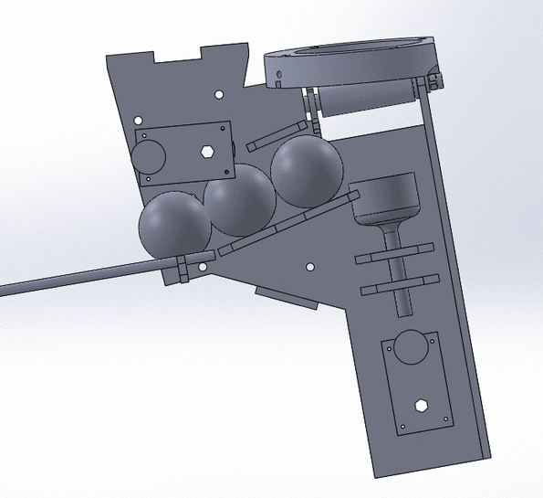

Mechanical System
The Baller
The baller is the most complex and important system in the game. It is responsible for making sure that the player actually has balls to shoot. It has three primary parts. There are two launchers that actually shoot the balls into the air. Then, once the balls fall down, the fall it a sorting mechanism. This mechanism funnels them into two loading mechanisms that return the balls to the launchers.
The Launchers
There are two different types of launchers on the system. On is a spring loaded launcher that catapults the balls into the air. The other is a spinning wheel launcher that shoots the balls into the air similarly to a pitching machine. The reason that we have two different designs is that our first design, the spring loaded launcher, looked as if it would be likely to fail approximately a week before the project deadline. The high loads on the shooting linkage were causing it to fall apart every time that it launched more than ten balls in a row. Therefore, we chose to also design and test the wheeled shooter. During this period of time, we realized that the reason that the spring loaded shooter was falling apart was because it needed a hard stop at the end of the sprung actuation in order to reduce the loads on the linkage. Therefore, we ended up with two different systems that both worked and chose to simply use two different types of launchers rather than attempt to build another one in the short period of time that we had.
Spring Loaded
The spring loaded launcher uses a linkage to pull back a spring loaded platform. The linkage has a link that will release rapidly when it goes over-center, causing the ball to launch. The gif below shows how this works.
This launcher is loaded via a mechanism that only lets one ball into the machine at once.
There is a break beam sensor that determines if there is a ball that is ready to be loaded. Once there is a ball loaded and the software has given the command to fire, the motor turns until a limit switch has been hit that determines when the cycle is over.
There were numerous challenges associated with building this system. The linkage undergoes very high loading, especially when it needs to stop the platform at the end of the spring loaded actuation. We went through four major iterations of this system. We started with a very simple proof of concept that was developed in less than a day. This prototype showed us that the concept was possible. However, the linkage was made from laser cut delrin parts that almost immediately snapped. The second iteration used an aluminum linkage, and was also designed such that it could fit into the overall system properly. However, this linkage also was inefficient because there was aluminum on aluminum contact that caused rubbing. Additionally, the 3D printed platform that actually launched the ball broke due to the bearing stresses of pulling back the platform. The third iteration fixed the issues with the launch platform, but there were still problems with the linkage. The fourth iteration finally fixed the issues with the linkage by using an entirely CNC machined linkage that used shoulder screws and bronze bushings. It also included a hard stop at the top of the device so that the force of stopping the launch platform would not be on the linkage, but rather on the hard stop. This design was shown to work for many ball launches.
Spinning Wheel
The wheeled launcher was developed when we had issues with the spring loaded launcher pulling itself apart due to the launch forces. These issues were later fixed through the use of the hard stop, but at this point we were concerned that the spring loaded launcher would never be reliable and therefore chose to use our backup plan. In retrospect, we should have been using wheeled launchers the entire time. However, our initial prototype was unreliable because the balls that we tested with compressed unreliably. We therefore decided to build a spring loaded launcher instead. The balls that we ended up using for our final design compressed much more reliably, and therefore a spinning wheel launcher was more plausible.
This launcher works through having two rollers connected to ungeared DC motors through spider shaft couplings machined into the shafts. The ball is forced into these rollers through a crank slider linkage. It uses a similar break beam sensor to the spring loaded linkage in order to determine when the launcher is loaded and ready to fire.
This launcher was much less of a challenge to build. It is also more reliable. It is clear now that building two of these would have been a much better plan, however, our initial tests did not show this, so we also developed the spring loaded launcher.
The Sorter
The balls are returned to the launchers via a sorting mechanism and an elevator system. The sorting mechanism is a rotating wheel that clears ball jams. The elevator uses round belts an aluminum rods to bring the balls back to the launchers.